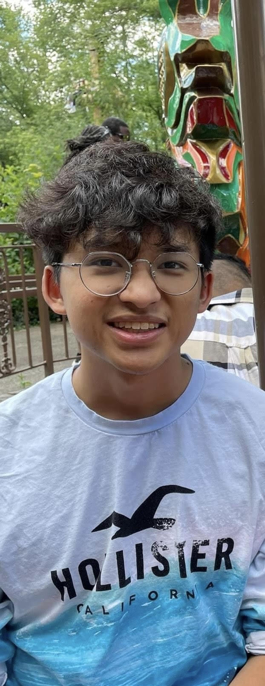

Nolan Nguyen - Digital CV
Welcome to my site!
About Me!

I'm a Vietnamese-born immigrants. I moved here in 2010.
I'm a huge music head with Bruno Mars and Kendrick Lamar being my favorite artists
I'm a big anime fan with One Piece being my favortie
My goals is to become a therapist.
Digital Projects
Digit 100
Cool Project
Hobbies
My Top Hobbies